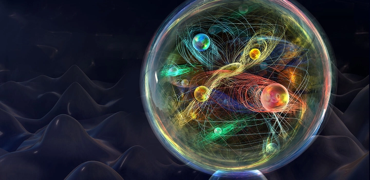
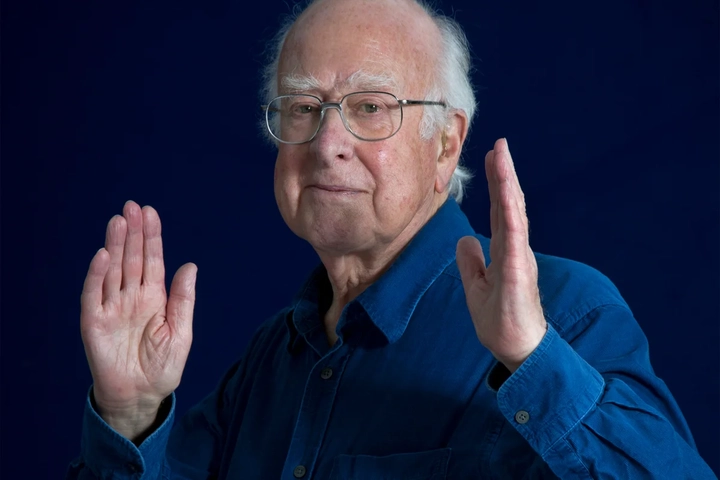
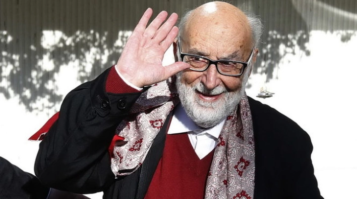

Từ vật lý hạt cơ bản và khám phá Boson Higgs đến giải thưởng Nobel Vật lý 2013
Từ thuở sơ khai, con người đã không ngừng đặt câu hỏi: “Vũ trụ được tạo nên từ gì?” và “Vì sao vật chất lại có khối lượng?”
Những câu hỏi tưởng chừng trừu tượng ấy lại dẫn nhân loại đến một trong những khám phá vĩ đại nhất thế kỷ XXI — Boson Higgs, hay còn được mệnh danh là “hạt của Chúa”.
Đằng sau cái tên đầy bí ẩn ấy là câu chuyện về hành trình nửa thế kỷ của khoa học hiện đại, nơi hàng nghìn nhà vật lý hợp tác để tìm ra mảnh ghép cuối cùng của Mô hình Chuẩn (Standard Model) – bản đồ lý thuyết mô tả cấu trúc cơ bản của vũ trụ.
Khám phá này không chỉ giúp chúng ta hiểu rõ hơn về bản chất vật chất, mà còn mở ra cánh cửa dẫn đến tương lai của vật lý lượng tử, vũ trụ học và công nghệ hiện đại.
1. Vật lý hạt cơ bản là gì?
Vật lý hạt cơ bản (Particle Physics) là ngành khoa học nghiên cứu những thành phần nhỏ nhất cấu tạo nên vật chất và các lực tương tác giữa chúng. Nếu vật lý cổ điển giúp con người hiểu được cách Trái Đất quay quanh Mặt Trời hay cách quả táo rơi xuống đất, thì vật lý hạt lại đi sâu hơn – đến tận mức độ hạ nguyên tử, nơi mọi quy luật quen thuộc dường như không còn đúng.
Ở cấp độ này, “thế giới” mà chúng ta biết được xây dựng từ những viên gạch cực nhỏ gọi là hạt cơ bản (elementary particles). Những hạt này không thể chia nhỏ hơn nữa – chúng là nền tảng của toàn bộ vũ trụ. Các nhà khoa học đã xác định rằng mọi vật chất, từ không khí ta hít thở đến ngôi sao xa xôi hàng tỷ năm ánh sáng, đều được hình thành từ quark và lepton – hai họ hạt cơ bản chủ chốt.
Song song với vật chất là các lực cơ bản chi phối vũ trụ: lực hấp dẫn, lực điện từ, lực hạt yếu và lực hạt mạnh. Chúng quyết định cách các hạt tương tác, kết hợp hay phân rã. Việc hiểu rõ cách những hạt nhỏ bé này vận hành chính là chìa khóa để con người lý giải sự hình thành của vũ trụ, từ vụ nổ Big Bang đến cấu trúc nguyên tử đầu tiên.
2. Mô hình Chuẩn – Bản đồ của vũ trụ hạ nguyên tử
Để mô tả toàn bộ “vũ trụ vi mô”, các nhà vật lý đã phát triển một lý thuyết hoàn chỉnh gọi là Mô hình Chuẩn (The Standard Model). Đây là hệ thống lý thuyết mô tả chính xác cách các hạt cơ bản tồn tại và tương tác với nhau. Nó giống như “bản đồ giải phẫu” của vũ trụ ở cấp độ hạ nguyên tử.
Theo Mô hình Chuẩn, mọi vật chất được chia làm hai nhóm lớn: hạt vật chất (fermion) gồm quark và lepton, và hạt mang lực (boson) như photon, gluon, boson W/Z.

-
Quark tạo nên proton và neutron trong hạt nhân nguyên tử.
-
Lepton tiêu biểu là electron, giúp hình thành lớp vỏ nguyên tử.
-
Boson là những “người đưa tin” của các lực – chẳng hạn photon truyền lực điện từ, gluon mang lực hạt mạnh.
Điều đặc biệt là Mô hình Chuẩn đã dự đoán được hầu hết các hiện tượng vật lý mà chúng ta quan sát được, từ sự phân rã của hạt cho đến sự hình thành của nguyên tử. Tuy nhiên, nó vẫn thiếu một mảnh ghép quan trọng: vì sao các hạt có khối lượng?
Câu hỏi ấy chính là lý do khiến con người phải đi tìm Trường Higgs và Boson Higgs – nhân vật chính của câu chuyện này.
3. Trường Higgs – Nền vải của khối lượng
Hãy tưởng tượng vũ trụ là một căn phòng khổng lồ đầy sương mù dày đặc. Khi bạn đi qua, lớp sương bám vào người bạn, khiến bạn di chuyển chậm lại – đó chính là cách các hạt “nhận” khối lượng. Lớp sương ấy tượng trưng cho Trường Higgs (Higgs Field).
Theo lý thuyết được Peter Higgs và các cộng sự đề xuất năm 1964, Trường Higgs là một trường năng lượng vô hình bao trùm toàn bộ không gian. Các hạt cơ bản khi tương tác với trường này sẽ “hấp thụ” một phần năng lượng và có được khối lượng.
-
Hạt tương tác mạnh với trường Higgs (như boson W và Z) có khối lượng lớn.
-
Hạt tương tác yếu hơn (như electron) có khối lượng nhỏ hơn.
-
Riêng photon – hạt ánh sáng – không tương tác với trường Higgs, nên nó không có khối lượng và di chuyển với tốc độ ánh sáng.
Trường Higgs giống như “chất keo nền” giữ vũ trụ ổn định. Nếu không có nó, các hạt sẽ không thể gắn kết, nguyên tử sẽ không tồn tại, và mọi dạng vật chất sẽ tan biến trong hỗn loạn năng lượng. Nói cách khác, không có Trường Higgs – sẽ không có vũ trụ như chúng ta biết hôm nay.
4. Boson Higgs – Mảnh ghép cuối cùng còn thiếu
Nếu Trường Higgs là đại dương vô hình bao quanh chúng ta, thì Boson Higgs chính là “gợn sóng” trên mặt nước ấy – bằng chứng cụ thể cho sự tồn tại của trường. Nó là hạt lượng tử đại diện cho năng lượng dao động của Trường Higgs.

Khi các nhà khoa học xây dựng Mô hình Chuẩn, họ có thể mô phỏng hầu hết hiện tượng vật lý, nhưng lại không thể giải thích được nguồn gốc của khối lượng. Việc chứng minh sự tồn tại của Boson Higgs trở thành bước cuối cùng để hoàn thiện Mô hình Chuẩn, giống như việc tìm thấy mảnh ghép cuối cùng trong bức tranh nghìn mảnh.
Tuy nhiên, Boson Higgs cực kỳ khó quan sát. Nó tồn tại chưa đến một phần tỷ giây trước khi phân rã thành các hạt khác. Để phát hiện nó, các nhà vật lý phải tạo ra những va chạm hạt mạnh chưa từng có – mô phỏng lại điều kiện của vũ trụ ngay sau vụ nổ Big Bang. Chính vì vậy, cuộc săn tìm Boson Higgs đã trở thành một trong những thí nghiệm tham vọng nhất lịch sử loài người.
5. Cuộc săn tìm kéo dài nửa thế kỷ
Hành trình đi tìm Boson Higgs bắt đầu từ những năm 1960, khi Peter Higgs cùng sáu nhà vật lý khác độc lập đề xuất cơ chế Higgs. Tuy nhiên, trong nhiều thập kỷ sau đó, công nghệ chưa đủ để kiểm chứng lý thuyết này.
Các thí nghiệm nhỏ tại Mỹ và châu Âu trong thập niên 1980 – 1990 liên tục thất bại trong việc tìm thấy dấu vết của Boson Higgs. Nhưng giới khoa học không bỏ cuộc – họ hiểu rằng việc chứng minh hay bác bỏ Boson Higgs sẽ thay đổi toàn bộ nền vật lý hiện đại.
Bước ngoặt xảy ra khi Tổ chức Nghiên cứu Hạt nhân châu Âu (CERN) xây dựng Máy gia tốc Hadron Lớn (Large Hadron Collider – LHC), cỗ máy mạnh nhất từng được tạo ra. Với chiều dài hơn 27 km nằm sâu dưới lòng đất biên giới Pháp – Thụy Sĩ, LHC cho phép va chạm proton ở tốc độ gần bằng ánh sáng, tái hiện điều kiện ngay sau Big Bang.
Hàng ngàn nhà khoa học từ khắp thế giới đã hợp tác trong thí nghiệm này, và sau gần nửa thế kỷ nghiên cứu, nhân loại cuối cùng cũng chạm tay vào một trong những bí ẩn lớn nhất của tự nhiên: Boson Higgs.
6. Khám phá năm 2012 – Bước ngoặt của nhân loại
Ngày 4 tháng 7 năm 2012, tại Trung tâm Nghiên cứu Hạt nhân châu Âu (CERN), các nhà khoa học công bố một tin tức làm chấn động toàn cầu: họ đã quan sát được một hạt mới có đặc tính trùng khớp với dự đoán của Boson Higgs. Sự kiện này không chỉ là một thành tựu khoa học thuần túy, mà còn là bước ngoặt trong hành trình khám phá vũ trụ – một khoảnh khắc được ví như khi loài người lần đầu nhìn thấy electron hay khám phá ra cấu trúc DNA.
Hạt mới được phát hiện thông qua các vụ va chạm proton ở năng lượng cực cao trong Máy gia tốc Hadron Lớn (Large Hadron Collider – LHC). Khi hai proton va chạm gần tốc độ ánh sáng, năng lượng sinh ra đủ để tái tạo điều kiện của vũ trụ chỉ vài phần tỷ giây sau Vụ Nổ Lớn (Big Bang). Trong đống dữ liệu khổng lồ ấy, các nhà khoa học phát hiện tín hiệu cho thấy sự tồn tại của một hạt có khối lượng khoảng 125 gigaelectronvolt (GeV) – trùng khớp với dự đoán của lý thuyết Higgs.
Đó là khoảnh khắc mà Peter Higgs – người từng đề xuất cơ chế này vào năm 1964 – xúc động rơi nước mắt. Sau gần nửa thế kỷ, ý tưởng của ông cuối cùng cũng được chứng minh bằng thực nghiệm. Con người đã tìm thấy “viên gạch cuối cùng” trong tòa nhà Mô hình Chuẩn, khẳng định rằng vạn vật có khối lượng là nhờ tương tác với trường Higgs lan tỏa khắp vũ trụ.
7. Giải Nobel Vật lý 2013 và sự công nhận toàn cầu
Một năm sau, Giải Nobel Vật lý 2013 được trao cho Peter Higgs (Đại học Edinburgh, Anh) và François Englert (Đại học Libre de Bruxelles, Bỉ) “vì đã đề xuất lý thuyết về cơ chế giúp chúng ta hiểu được nguồn gốc khối lượng của các hạt cơ bản”. Đây là một trong những giải Nobel có sức lan tỏa sâu rộng nhất trong thế kỷ XXI, bởi nó không chỉ tôn vinh hai nhà lý thuyết tiên phong, mà còn đại diện cho nỗ lực chung của hàng nghìn nhà khoa học thuộc hơn 100 quốc gia đã làm việc tại CERN suốt nhiều thập kỷ.

Sự kiện này là minh chứng cho tinh thần khoa học không biên giới. Trong thế giới phân cực bởi chính trị và kinh tế, các nhà vật lý từ khắp nơi vẫn cùng hợp tác để truy tìm một hạt nhỏ hơn cả nguyên tử, nhưng lại có ý nghĩa to lớn đối với nhận thức của nhân loại. Giải Nobel dành cho Boson Higgs không chỉ là vinh quang của cá nhân, mà còn là chiến thắng của tri thức và tinh thần khám phá chung của loài người.
8. Tác động khoa học và công nghệ từ nghiên cứu Higgs
Khám phá Boson Higgs không chỉ mở ra hiểu biết mới về vũ trụ, mà còn mang lại nhiều thành tựu công nghệ đột phá.
Để săn tìm một hạt tồn tại chưa đến phần tỷ giây, con người phải phát triển những công cụ có độ chính xác cực cao – và chính điều đó đã thúc đẩy hàng loạt ngành công nghệ hiện đại.
Từ các máy gia tốc hạt, công nghệ siêu dẫn, cảm biến hạt, đến kỹ thuật xử lý dữ liệu khổng lồ (Big Data) – tất cả đều được phát triển hoặc hoàn thiện nhờ các nghiên cứu liên quan đến Boson Higgs. Trong y học, máy gia tốc hạt đã được ứng dụng vào xạ trị ung thư bằng proton, giúp tiêu diệt tế bào ung thư mà không làm tổn thương mô lành. Các công nghệ siêu dẫn phát triển từ LHC lại mở đường cho điện toán lượng tử và lưu trữ năng lượng hiệu quả hơn.
Đặc biệt, ít ai biết rằng mạng World Wide Web (WWW) – nền tảng của Internet hiện nay – được phát minh tại CERN vào năm 1989 để giúp các nhà khoa học chia sẻ dữ liệu hạt nhân nhanh hơn.
Nói cách khác, hành trình truy tìm Boson Higgs không chỉ giúp con người hiểu thêm về vũ trụ, mà còn tác động trực tiếp đến đời sống hàng ngày của hàng tỷ người thông qua công nghệ.
9. Những câu hỏi còn bỏ ngỏ sau Boson Higgs
Dù việc phát hiện Boson Higgs là thành tựu vĩ đại, nhưng nó không khép lại câu chuyện – ngược lại, nó mở ra hàng loạt bí ẩn mới.
Một trong những câu hỏi lớn là: liệu có nhiều loại Boson Higgs khác nhau không? Một số mô hình vật lý vượt ra ngoài Mô hình Chuẩn, như Siêu đối xứng (SUSY), dự đoán rằng có thể tồn tại nhiều dạng Higgs, mỗi dạng tương ứng với một khía cạnh khác nhau của vũ trụ.
Hơn nữa, khối lượng của Boson Higgs (125 GeV) lại nhỏ hơn nhiều so với giá trị mà lý thuyết gốc dự đoán – đây là điều khiến các nhà vật lý bối rối, vì nó gợi ý rằng có thể đang tồn tại những cơ chế vật lý sâu hơn mà con người chưa phát hiện ra.
Câu hỏi khác còn lớn hơn: Higgs có liên quan gì đến vật chất tối hay năng lượng tối – hai thành phần chiếm tới hơn 95% tổng năng lượng vũ trụ – hay không?
Nếu câu trả lời là có, thì Higgs có thể là “chiếc cầu” kết nối giữa thế giới vật chất nhìn thấy được và phần vô hình của vũ trụ.
10. Tương lai của vật lý hạt – Sau cánh cửa Higgs
Sau khi phát hiện Boson Higgs, vật lý hạt bước sang một chương hoàn toàn mới. Thay vì chỉ xác nhận Mô hình Chuẩn, các nhà khoa học đang hướng tới vượt qua giới hạn của nó.
Những dự án kế tiếp như Future Circular Collider (FCC) – máy gia tốc lớn hơn LHC gấp ba lần, hay Muon Collider, sẽ được xây dựng để thăm dò những mức năng lượng cao hơn nữa, nơi mà các hạt mới có thể lộ diện.
Mục tiêu của thế hệ nhà vật lý tiếp theo không chỉ là tìm thêm hạt, mà là tìm hiểu bản chất thật sự của không–thời gian, của siêu đối xứng, và của năng lượng tối đang khiến vũ trụ giãn nở nhanh dần.
Khám phá Boson Higgs là cánh cửa, và sau cánh cửa đó là một không gian tri thức gần như vô hạn – nơi mỗi câu hỏi được trả lời lại mở ra thêm mười câu hỏi mới.
Vật lý hạt, vì thế, không chỉ là lĩnh vực nghiên cứu những hạt nhỏ bé, mà là hành trình tìm hiểu chính nguồn gốc và số phận của vũ trụ.
Như nhà vật lý Freeman Dyson từng nói: “Khoa học không kết thúc bằng việc có được câu trả lời đúng, mà bắt đầu khi ta đặt ra những câu hỏi lớn hơn.”
Khám phá Boson Higgs chính là một trong những khoảnh khắc như thế – khi nhân loại, dù chỉ tiến thêm một bước nhỏ, lại nhìn thấy xa hơn bao giờ hết vào bản chất của thực tại.